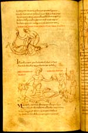
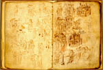

a. Aurelius Prudentius Clemens, Carmina, waarbij zijn Psychomachia. Latijn.
Handschrift op perkament, 181 ff., 250 x 160 mm. Noord-Frankrijk(?), midden(?) van de
negende eeuw. -- (BUR Q 3).
b. Aurelius Prudentius Clemens, Psychomachia, voorafgegaan door illustraties van
dit werk; en andere werken. Latijn. Handschrift op perkament, 26 ff. (gefolieerd van 35
tot en met 62), 210 x 150 mm. Limoges, circa 1025. -- (VLO. 15: cahier VIII)
Het oeuvre van de Spaanse christelijke schrijver Prudentius (348 - na 405) bestaat uit een corpus van gedichten, dat onder andere bijeen bleef in het eerste getoonde handschrift. Het meest gelezen was echter de Psychomachia, die dan ook vaak los van het overige werk werd afgeschreven. Het is een leerdicht, waarin de zeven hoofdzonden met de zeven hoofddeugden strijden om de ziel. De invloed ervan is moeilijk te overschatten. Heel wat vroege kunstwerken zijn op deze stof geïnspireerd. Dat kon des te gemakkelijker omdat de handschriften nogal eens geïllustreerd zijn; tot in de dertiende eeuw zijn er niet minder dan zestien exemplaren met miniaturen bewaard. Die voorkeur voor illustraties hangt vermoedelijk samen met het feit dat het hier, zoals al uit de omschrijving van de inhoud blijkt, om een allegorisch werk gaat, waarbij afbeeldingen het verstaan van de tekst vergemakkelijken.
In het kader van deze presentatie is vooral het tweede handschrift van belang. Het getoonde cahier maakt deel uit van een verzamelhandschrift dat is aangelegd door Adémar van Chabannes, een eigenzinnig kroniekschrijver, die omstreeks 988 geboren moet zijn en in 1034 in Jeruzalem stierf. In dit handschrift verzamelde hij naast een keur van uiteenlopende teksten ook heel wat illustraties, waaronder een complete reeks op de Psychomachia. Vast staat dat Adémar verscheidene vroege handschriften moet hebben gekopieerd die nu verloren zijn. De Prudentius-illustraties verraden naar het oordeel van Scheller dat Adémar hier veel van het laat-antieke karakter van zijn model behouden heeft.
Uit de hele opmaak van het handschrift blijkt dat hij zijn boek aanlegde voor persoonlijk gebruik, opdat het later kon dienen als model voor een formeel geschreven boek. Dat wordt onder meer bevestigd door het feit dat hij tekeningen los van de tekst opnam; de paar woorden die aan de verschillende illustraties zijn toegevoegd, zouden dan een hulpmiddel zijn om bij de uitwerking te voorkomen dat de afbeeldingen op een verkeerde plaats zouden worden opgenomen. Zo is ook te verklaren waarom in de pentekeningen bij de fabels de kleur met één enkele letter is aangeduid.
Adémars modellenboek is veruit het oudste handschrift in zijn soort. Het andere, onder a. genoemde handschrift, dat ooit behoorde aan de abdij van Egmond, is van ouder datum, maar geeft toch een goede indruk van het soort handschrift waartoe het modellenboek moest leiden. Het repertoire van de illustraties is goed te vergelijken, omdat beide handschriften, evenals alle geïllustreerde handschriften van de Psychomachia, van hetzelfde vijfde-eeuwse archetype moeten afstammen, ook al behoren de hier tentoongestelde twee tot verschillende families. Beide zijn opengelegd bij dezelfde passage. In het eerste handschrift stellen de drie scènes op de getoonde bladzijden, folia 140v-141r, achtereenvolgens voor: vrijgevigheid doodt de hebzucht (vers 596), zij deelt de schatten van de hebzucht aan de armen uit (vers 598) en zij spreekt de mensen toe (vers 604). Dezelfde taferelen vindt men op de getoonde linkerpagina van het tweede handschrift, op folio 41v, aan het einde van de bovenste en in de tweede rij.
Literatuur voor a.
- R. Stettiner, Die illustrierten Prudentiushandschriften. Berlin 1895; Tafelband, Berlin 1905.
- H. Woodruff, The illustrated manuscripts of Prudentius. Cambridge (Mass.) 1930.
- A.W. Byvanck, Les principaux manuscrits à peintures conservés dans les collections publiques du Royaume des Pays-Bas, Paris 1931 ( = Bulletin de la Société francaise de reproduction des manuscrits à peintures. 15), p. 61-65, 69-73.
Literatuur voor b.
- L’art roman à Saint-Martial de Limoges. Limoges 1950, nr. 26-29.
- R.W. Scheller, A survey of medieval model books. Haarlem 1963, p. 53-63.
- G.I. Lieftinck, Manuscrits datés conservés dans les Pays-Bas. T. 1. Amsterdam 1964, nr. 231.
- Christina, queen of Sweden. A personality of European civilisation. Stockholm 1966, nr. 1342.
- K.A. de Meyïer, Codices Vossiani Latini. Leiden 1973-1984 ( Bibliotheca Universitatis Leidensis. Codices manuscripti. XIII-XVI), t. 3, p. 31-42, vergelijk t. 4, p. 12.
- Ornamenta ecclesiae. Kunst und Künstler der Romanik. Köln 1985, Tl. 1, p. 314-315.
| vorige pagina | top pagina |